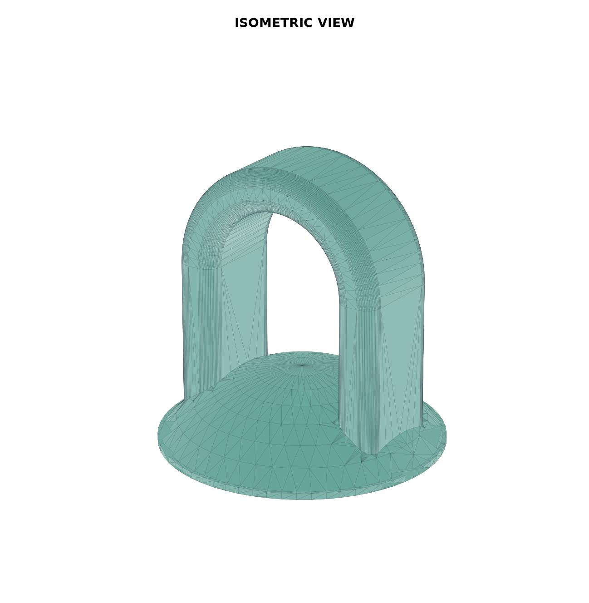
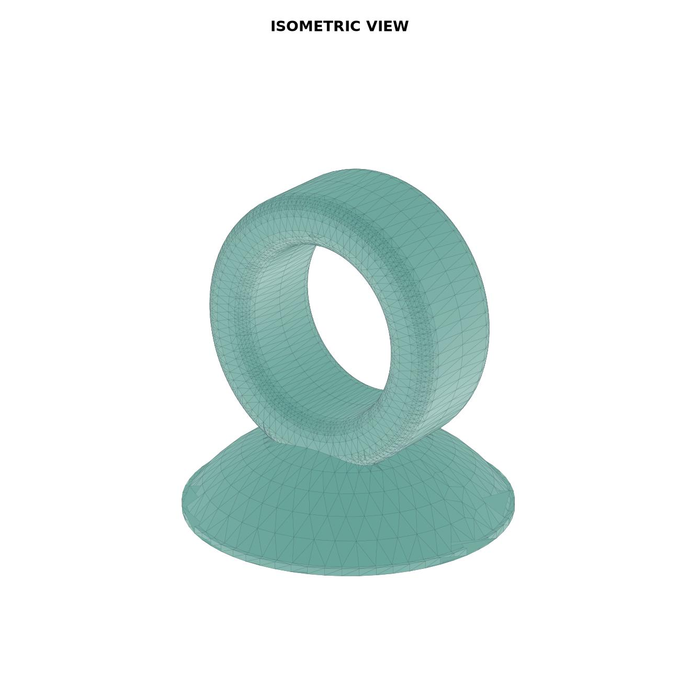

Model 01
Inverted-U loop
Semicircular arch with parallel legs fused to the inverted-saucer base.
Dimensioned JPG · Python sourceArtifact measurement · CAD reconstruction · comparative morphology
A measured copper-alloy bell-hook component was reconstructed as two Python-generated 3D CAD variants, then compared with image-scaled loop measurements from museum and journal bell records.
Research workflow
Copper bell-hook component documented using ruler and caliper photographs.
Measured envelope fixed at 8.160 mm overall height, 6.45 mm loop width and 4.00 mm inner opening.
Two valid single-solid STEP/STL/BREP models generated: inverted-U and embedded round-loop variants.
73 bell records assembled from museum collection pages and journal/archaeological sources.
Published major dimensions calibrated each image; visible loop height and width/diameter were measured from the object boundary.
Loop width/diameter is plotted against loop height and grouped by era, material, region/site and source.
Interactive dimensional graph
Full master dataset. The measured hook is shown as ★ at (6.45, 8.16).
Measured-hook neighbourhood
| Rank | Record | Loop W/D | Loop h | Distance |
|---|---|---|---|---|
| 1 | #048 MET-56441 | 6.90 | 8.10 | 0.454 |
| 2 | #040 MET-502518 | 8.72 | 7.44 | 2.381 |
| 3 | #030 MET-449196 | 8.00 | 10.01 | 2.414 |
| 4 | #046 MET-551319 | 9.16 | 11.19 | 4.065 |
| 5 | #059 MET-62409 | 9.33 | 3.85 | 5.184 |
3D reconstruction

Model 01
Semicircular arch with parallel legs fused to the inverted-saucer base.
Dimensioned JPG · Python source
Model 02
Flat filleted loop section; lower arc embedded 0.30 mm while retaining 8.160 mm overall height.
Dimensioned JPG · Python sourceOpen research package
Measurement status
{kind=link}
{kind=link}